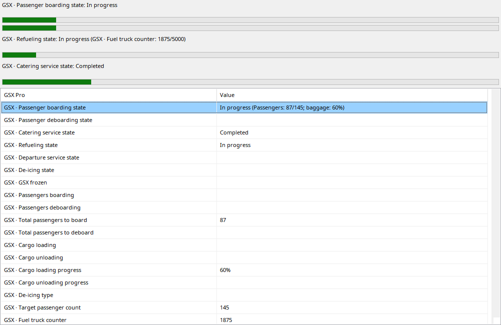

Services progress through request, execution and completion according to captured GSX variables. Bars appear from Requested; animation without a known target is not a measured percentage. Boarding can show passenger and cargo/baggage progress together; refueling shows delivered/target fuel. Changing tanker can reset a counter. Seeking restores historical service state and counters without filling them from the flight’s final totals.
GSX must be installed and supplying supported variables at capture time.
| Option / action | Behavior and limitations |
|---|---|
| Requested | A service bar appears when requested. Request does not prove arrival or measurable work started. |
| Boarding / deboarding | Available passenger/baggage/cargo counts and known targets. Missing historical targets are not inferred from future samples. |
| Refueling | Uses available transferred/target fuel and tanker state. Multiple truck sessions/resets are possible; one counter is not necessarily the flight total. |
| Other services | Catering, departure/pushback-related and deicing progress when available. Unmeasured completion can show completed without invented intermediate counts. |
| Replay | Rewinding restores state at that time. Activity descriptions are localized; raw SDK fields remain inspectable under Values. |
